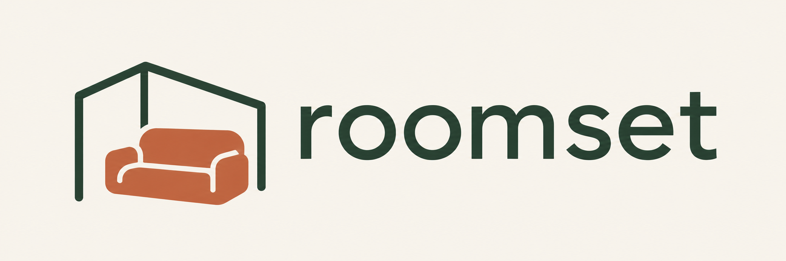

Roomset
Make room for what fits.
Project proposal · 2 November 2026 · Meta Global AI Developer Hackathon
1. The proposition
Roomset helps people try a particular sofa in their own space before buying it. A user provides a product listing and 3–6 overlapping photographs of one room corner, confirms dimensions and answers targeted questions. The planned result is a simplified, editable 3D scene in which they can move, rotate and save the sofa arrangement.
The core value is a usable spatial decision: “Where could this sofa go, and what might it obstruct?” Visual appearance and clearance remain estimates wherever the evidence is incomplete. This proposal describes the intended build, not verified production capability.
2. The person and problem
The initial audience is renters and people furnishing a small living area. Product dimensions alone are difficult to relate to a real corner, and static previews cannot show the consequences of moving the item. Our product hypothesis is that a dimensioned, movable object in a simplified model of the user’s space can make the decision easier.
The first version deliberately focuses on sofas, one placement area and selected demo listings. Retailer pages may fail or omit dimensions, so screenshot upload and manual confirmation are essential parts of the experience. We do not claim validated demand, a measured return reduction or universal retailer support.
3. The user journey
- Paste a sofa listing or upload a screenshot. Extract the product name, source images and available dimensions.
- Confirm width, depth and height. Show missing or uncertain fields instead of inventing them.
- Capture 3–6 overlapping photographs of the intended corner. Replace blurred, duplicate or poorly connected views.
- Answer focused questions about boundaries, obstacles and intended orientation. Provide a known distance between identifiable points for scale.
- Receive a simplified room and dimensioned sofa, with automatic or assisted modeling clearly identified.
- Drag on the floor, rotate, reset and switch between original and top views. Furniture dimensions remain fixed.
- Review approximate overlap/clearance feedback, save the arrangement and return to the product listing. Reloading restores placement without regeneration.
4. Technical architecture
| Layer | Planned responsibility |
|---|---|
| React, Vite, TypeScript | Phone-first product confirmation, uploads, questions, progress and results |
| Three.js | Interactive scene, floor-constrained movement, yaw rotation, views and saved transforms |
| FastAPI | Sessions, guarded listing retrieval, upload validation, orchestration and authorized artifact access |
| Muse Spark Open on Baseten | Structured product extraction, semantic photo interpretation and clarification requests |
| Meta SAM | A tested segmentation step in the room/object workflow; claim only the integration actually demonstrated |
| VGGT | Time-bounded experiment to recover camera/depth/point information from overlapping photographs |
| Modal | Background CPU/GPU processing, geometry jobs and headless Blender; hosting subject to verified account readiness |
| Blender | Trusted Python builders assemble room surfaces and dimensioned sofa geometry, then export separate GLB assets |
| Persistent artifacts | Inputs, structured results, scene manifest, assets and saved placement isolated by session |
Muse supplies structured interpretations and parameters. It is not the measurement engine, and arbitrary model-written scripts are not executed. A job returns an ID immediately; the browser polls progress and loads completed assets. Moving a sofa is a local browser action and triggers no model call or Blender render.
5. Geometry strategy and honest fallback
Attempt VGGT for at most approximately four focused engineering hours. A useful result must provide coherent views and room surfaces that can enter the editor without extensive manual cleanup. Fit simplified floor/wall geometry and calibrate it with a known distance; calibration does not eliminate reconstruction error.
If the attempt fails, switch to user-assisted modeling: the user confirms boundaries and measurements, Muse helps identify ambiguity, and a deterministic builder constructs the room. Unseen regions remain unknown rather than verified free space.
The furniture baseline is a parameterized Blender sofa or an appropriately licensed prepared asset sized to confirmed outer dimensions. Label it a dimensioned approximation when exact product geometry is unavailable. SAM 3D Objects is a separate, optional reconstruction experiment after access, hardware and export compatibility are proven. Hosted SAM segmentation is not SAM 3D Objects.
6. Scope and priorities
Required: one sofa category; one corner; link/screenshot/manual intake; up to six photos; useful clarifications; scale confirmation or an explicit uncalibrated label; editable scene; fixed furniture dimensions; save/restore; error recovery; phone browser demo.
Stretch: SAM 3D Objects, language-directed placement, richer materials and an optional Muse Image appearance render. These must not block the complete flow.
Out of scope: full-home scanning, live AR, rearranging every existing object, hidden-background recovery, exact-measurement guarantees, complex physics, delivery-route fit, fine-tuning and a general Blender agent/MCP integration.
7. Team and delivery plan
| Owner | Responsibility |
|---|---|
| Tường | Product intake, all non-3D screens, backend/session transport, persistence, hosting and submission packaging |
| Benedict | Photo/overlap analysis, reconstruction, scale/surface processing, Blender builders and encapsulated Three.js editor |
| Shared | Scene contract, integration, real-room validation, scope decisions and demo recording |
November 2: agree the shared fixture and contracts; prove provider access and a Blender export; run the bounded reconstruction attempt; get a movable sofa working in the browser.
November 3: connect one complete real session by midday; test another corner and failure recovery; check phone interaction; record the first working demo.
November 4: freeze features, fix defects, finalize footage and submission materials. Internal readiness target: 18:00 UTC+7. The current project plan records the official deadline as November 5 at 09:00 UTC+7; verify participant portal requirements and the video limit before submission.
8. Shared scene contract
Use meters, a right-handed Y-up frame and an XZ floor. Keep room and sofa assets separate. Sofa local X is width, Y is height, Z is depth, with a base pivot on the floor. Apply size conversion exactly once. Persist position and yaw independently of geometry.
The scene manifest includes photo references, floor/wall/obstacle data, calibrated or estimated status, asset references, warnings and construction provenance. Product fields retain their source and confirmation state. Progress states cover collecting, checking, needs_input, reconstructing, building, ready and recoverable failure.
9. Acceptance and evidence
- A real listing produces user-confirmed dimensions; blocked pages and missing data have working fallbacks.
- A real photo set and user answers drive the output. A prepared room is never presented as a new reconstruction.
- Scale is confirmed or the scene is explicitly labeled approximate; unknown space stays visibly unknown.
- Room and sofa load on a phone. Drag, rotate, reset, save and restore preserve furniture dimensions.
- One additional corner and one failure case are tested. Compare a few actual and modeled distances and record discrepancies.
- Record full-run timing, including cold-start effects, and evidence one real call/job for every claimed provider integration.
- Keys remain server-side; sessions cannot read each other’s photos/assets. Bound URL retrieval, uploads, retries and GPU concurrency; support deletion under a stated retention policy.
10. Costs, risks and current state
Historical notes record Meta API credits and Baseten hackathon access, plus Modal credit approval. These are not current balance or activation checks. Verify allowances and access before running paid work; cache results, limit retries and measure actual usage. There is no validated per-session cost or latency promise for the new 3D pipeline.
The main risks are insufficient photo overlap, uncertain scale, product-shape mismatch, account setup and long processing times. The bounded reconstruction test, assisted fallback, dimensioned proxy labels and persistent asynchronous jobs are the practical mitigations.
GitHub main was checked on November 2 at commit 922ac4e6bf42c08a314d0983ba4d87c3338173b8: it contained Agent.MD and .gitignore, with no application implementation published there. A separate local UI prototype exists; it does not establish live reconstruction, Blender, Modal or provider integration. This proposal is a delivery target, not a completion report.
11. Brand and demo narrative
The proposed brand direction is Warm Habitat: warm ivory space, forest-green structure, terracotta furniture and quiet editorial typography. The supplied lowercase roomset logo is the identity anchor. Public copy says “Plan your sofa in your space”; uncertainty labels stay practical and visible.
The demo should show a real product and corner, dimension confirmation, a useful clarification, the resulting scene, two arrangements and one qualified clearance/overlap observation. Label previously processed samples and skipped waiting time. No exact-replica, precision or performance claim should exceed the evidence.
Sources and authority
- Current architecture and scope: https://github.com/khanhtuongnakitomo/RoomSet/issues/2
- Software ownership and acceptance: https://github.com/khanhtuongnakitomo/RoomSet/issues/3
- AI/3D, Blender and reconstruction plan: https://github.com/khanhtuongnakitomo/RoomSet/issues/4
- Historical image-swap proposal, superseded: https://github.com/khanhtuongnakitomo/RoomSet/issues/1
- Remote source snapshot: https://github.com/khanhtuongnakitomo/RoomSet/tree/922ac4e6bf42c08a314d0983ba4d87c3338173b8
Issue #2 supersedes the old image-swap direction in issue #1 and the committed Agent.MD. Brand choices in this package are proposed extensions around the user-supplied logo. This package does not authorize publication or deployment.